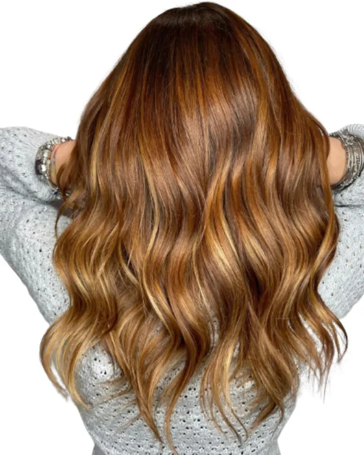
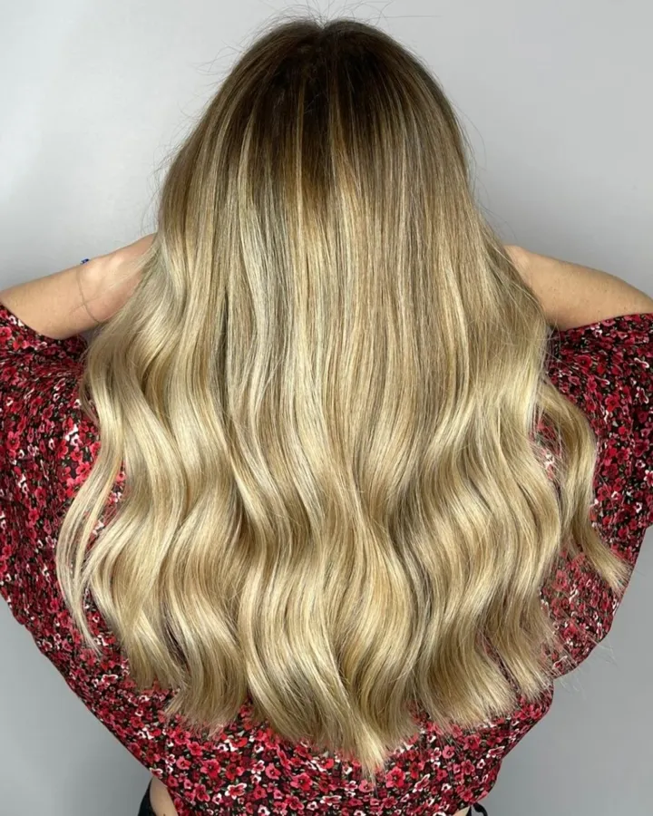
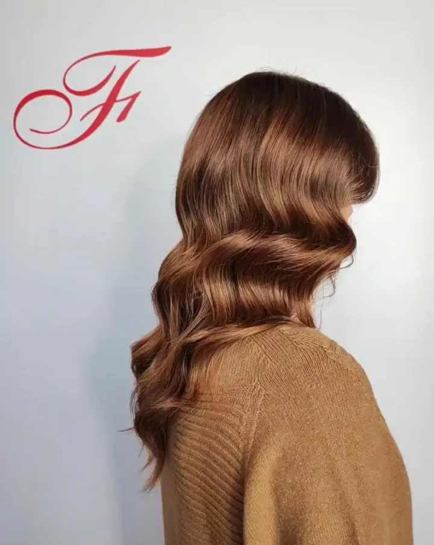
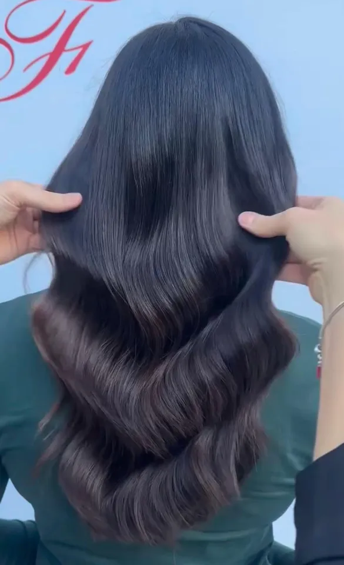
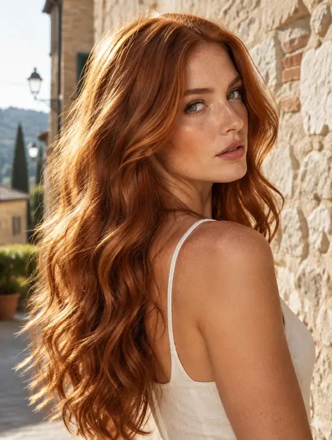
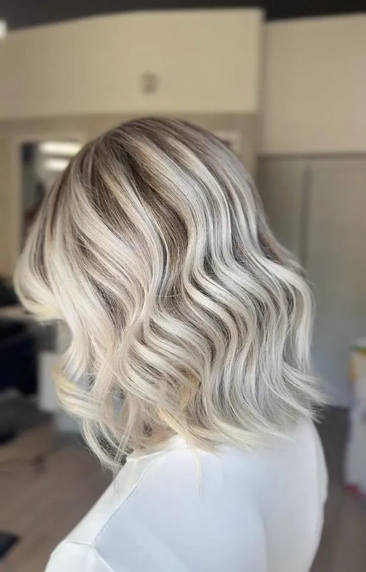
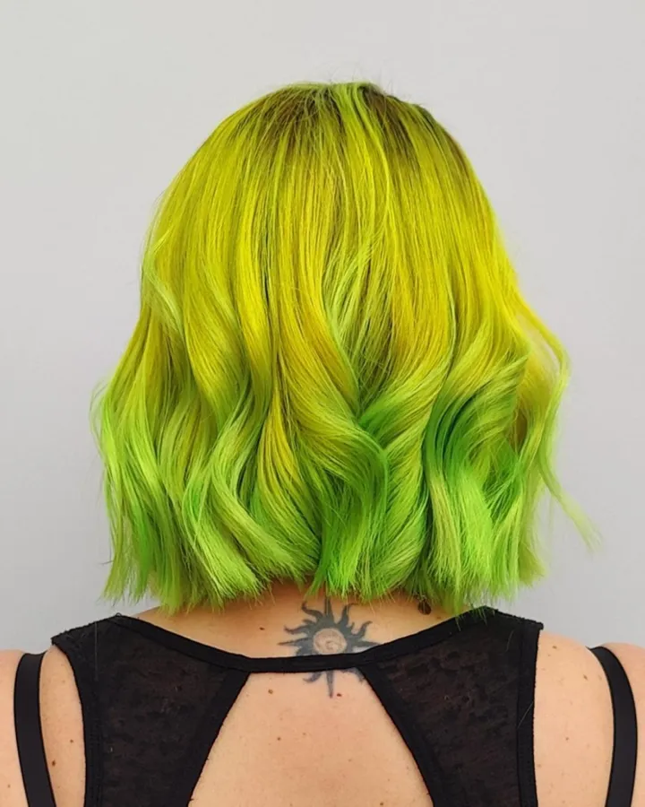
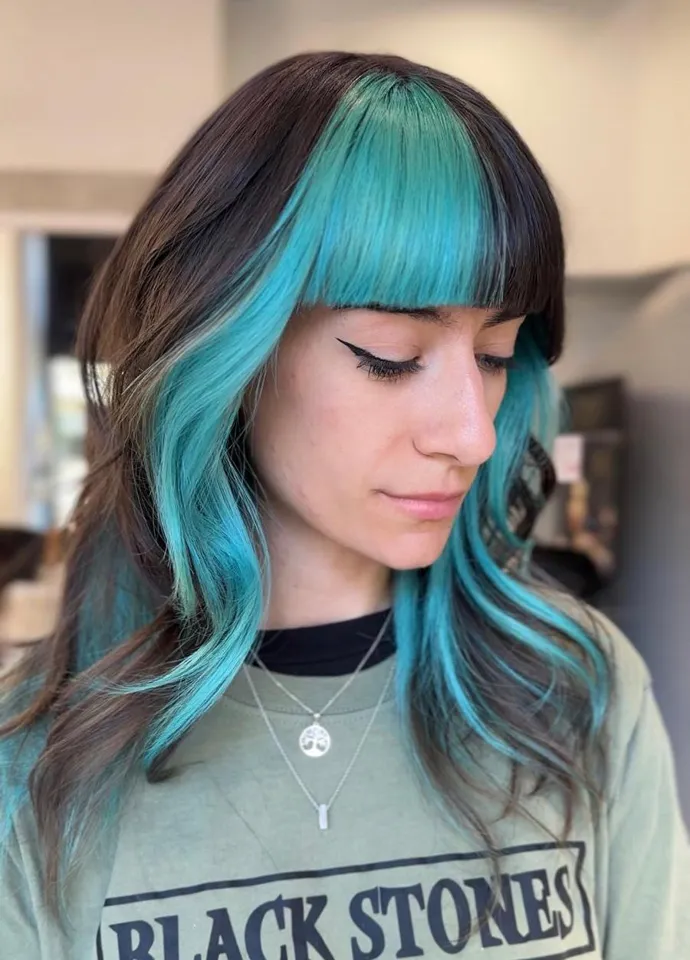
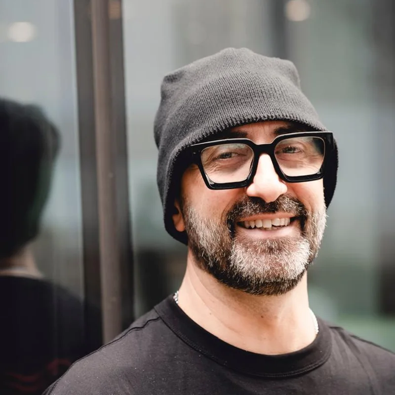
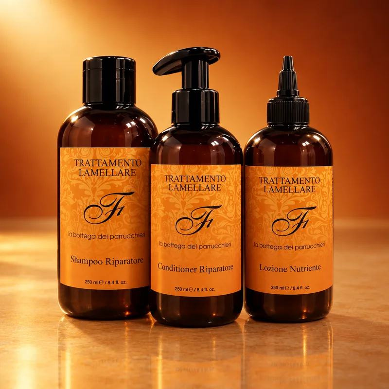

Pescara · Hair design & colour
La bellezza, su misura
Il colore ha
una firma.
La tua. La nostra.
Ogni sfumatura nasce da una visione. Tecnica, ricerca e sensibilità per creare un risultato che parla di te.
TaglioColoreStylingHaircare

01 / La firma
Non un colore
qualsiasi. Il tuo.
Un colore pensato per te, per la tua base, la tua personalità e il movimento dei tuoi capelli.

BlondeBiondo VanigliaLuce naturale, sfumature luminose. 
CaramelCaramel MochaCalore prezioso, riflessi armoniosi. 
BrunetteMocha BrunetteProfondità intensa, eleganza naturale. 
RedRamePersonalità e carattere. 
BlondeBiondo PlatinoFreddo, luminoso, sfumato. CaramelBalayage Cinnamon CaramelCannella e caramello, baciati dal sole. 
BrunetteEffetto BottegaSchiariture a mano, sfumate fino alle punte. 
CreativeColor ArtIl colore come segno. 
CreativeColor BlockUn blocco di colore, netto.
Foto reali dei lavori del salone. Il rame è ancora un'immagine illustrativa: arriverà un lavoro vero.
Trova il tuo servizio ↗02 / La tecnica
La bellezza
è un risultato.
La tecnica fa
la differenza.
Dietro ogni lavoro ci sono ascolto, consulenza e conoscenza del colore. Non seguiamo soltanto una tendenza: la interpretiamo per te.
Effetto Bottega, il nostro servizio firma: schiariture a mano libera o con stagnole, sfumate in modo graduale fino alle punte, sulla tonalità giusta per te.

03 / I nostri servizi
Un progetto
per i tuoi capelli.
Dalla consulenza al risultato, un percorso su misura per valorizzare la tua bellezza.
Tutti i servizi, nel dettaglio
- Effetto Bottega
- Schiariture a mano libera o con stagnole, che permettono di raggiungere la tonalità perfetta per ogni cliente, sfumando in maniera totalmente graduale fino alle punte.
- Air Touch
- Una schiaritura dall'effetto super natural, dove la sfumatura si fonde perfettamente con il colore di base, senza stacchi netti.
- Color Gloss
- La tinta perfetta per una copertura lucida e uniforme, dalla radice alle punte.
- Colorazione naturale
- Il colore specifico per chi ha allergie o è in gravidanza: dura nel tempo e nutre il capello.
- Henné
- L'erba tintoria eco-friendly per chi cerca una soluzione naturale per donare riflessi unici alla propria chioma.
- Ondulazione riccia
- La scelta perfetta per chi sogna un capello molto mosso o riccio, che sia morbido, definito e disciplinato.
- Anticrespo alla cheratina
- Il nostro trattamento vegan che elimina il crespo e i volumi, per un effetto waterproof. Dura dai 3 ai 6 mesi.
- Trattamento lamellare
- Crea una guaina protettiva intorno al capello sfibrato, per sigillare le cuticole e renderlo più lucido e disciplinato.
- Ricostruzione capillare
- Ricostruzione più o meno intensa della fibra capillare.
- Estensioni Microrings / Trimmer
- A fasce con mini microrings leggeri e semi-invisibili, o a ciocche sottilissime con il Trimmer, tramite un liquido vegetale. Effettuata a freddo, non appesantisce ed è completamente trasparente.
- Taglio e piega
- Un taglio per ogni personalità e la piega perfetta, che duri e ti faccia risplendere.
Il prezzo dipende dalla lunghezza e dal servizio: te lo diciamo quando confermiamo l'appuntamento, prima che tu venga.

04 / La Maison
Esperienza.
Ricerca.
Visione.
La Bottega unisce esperienza professionale, ricerca tecnica e sensibilità per la bellezza. Il confronto con il mondo dell'hairstyling e della moda alimenta una visione in continua evoluzione.
La nostra filosofia
Ogni persona, una storia. Ogni colore, una firma.
- 2023Parrucchiere dell'anno, Giornale del Parrucchiere
- WellaProfessionals Official Salon
- MFWBackstage Milano Fashion Week 2024 e 2025
- 4,8Google, 222 recensioni

Il fondatore
Fabio D'Attanasio
«La bellezza ha un'identità: la tua!»
Da oltre trent'anni nel mondo dell'hairstyling, vivo il mio lavoro con la stessa passione degli inizi. Nel 2017 nasce La Bottega dei Parrucchieri, un progetto evolutivo, fatto di tecnica, ricerca e continuo aggiornamento, dove ogni collaboratore contribuisce con uno specifico talento, passione e professionalità.
Nel tempo, il mio lavoro mi ha portato ad aprire un salone oltre mare, alle Canarie, e a far parte del team della Milano Fashion Week, sviluppando collaborazioni con Wella. Oggi La Bottega è anche una linea Haircare, Made in Italy e fitobiologica, per prolungare a casa il lavoro fatto in salone.
Backstage · Milano Fashion Week

Al lavoro 
Backstage Wella 
Prima della sfilata 
Con Raffaella Fico 
Con Annalisa 
Con Natasha Stefanenko 
Con Alessandro Cattelan 
Con Jo Squillo
La squadra
Scegli le tue mani.
Le clienti ci chiamano per nome. Tocca una persona e prenoti direttamente con lei.
In reception ti accolgono Sara e Siria.
05 / Haircare La Bottega
La bellezza
continua a casa.
Il risultato del salone incontra la cura di ogni giorno. Scopri i tuoi essenziali per accompagnare la bellezza dei capelli anche a casa: la nostra linea, Made in Italy e fitobiologica.
Scopri la linea ↗
Il tuo prossimo capitolo
I tuoi capelli.
Il tuo progetto.
Cominciamo da ciò che desideri. Raccontaci il risultato che immagini e troviamo insieme il percorso più adatto.
Vieni a trovarci
Piazza Garibaldi 13
Pescara
Orari
- Lunedì9:00 – 19:00
- Martedì9:00 – 19:00
- Mercoledì9:00 – 19:00
- Giovedì9:00 – 19:00
- Venerdì9:00 – 19:00
- Sabato9:00 – 19:00
- DomenicaChiuso